浅場から段階的に慣れられる
いきなり深い場所へ行くのではなく、足元や水面で落ち着いて準備しながら海へ入れます。初めてのビーチ講習でも、呼吸や浮力を一つずつ確認しやすい環境です。

三浦 海の学校のビーチダイビングや海洋実習で利用することがある、岩場と砂地が広がる城ヶ島の海。
初心者にもイメージしやすいよう、地形・ルート・生き物をまとめました。
梶の浜ビーチは、城ヶ島エリアでビーチダイビングを行う際に候補となるポイントです。エントリー口から岩場・砂地へアクセスでき、浅場で海に慣れながら、季節ごとの生き物観察も楽しめます。
三浦 海の学校では、当日の海況、参加者の経験、講習内容を見て安全に潜れる場所を選びます。梶の浜を利用する日は、プールや陸上で確認したスキルを海で落ち着いて実践しながら、三浦らしい岩礁の海を少しずつ体験していきます。
エントリー階段、岩盤、砂地、目印ブイ、泳ぎのルートをイメージしやすいようにまとめています。
初めての海洋実習では、海の中だけでなく、エントリー前後の動線も安心材料になります。
いきなり深い場所へ行くのではなく、足元や水面で落ち着いて準備しながら海へ入れます。初めてのビーチ講習でも、呼吸や浮力を一つずつ確認しやすい環境です。
岩の隙間にはウツボやコケギンポ、岩肌にはウミウシ、砂地にはエイやハゼの仲間が見られることがあります。講習の合間にも三浦の海らしさを感じられます。
ビーチで基本を身につけると、ファンダイビングやボートダイビングにも進みやすくなります。リフレッシュダイビングにも向いた、海への再入門ポイントです。
季節や海況によって出会える生き物は変わります。ここでは、三浦のビーチポイントで紹介しやすい代表種をまとめました。
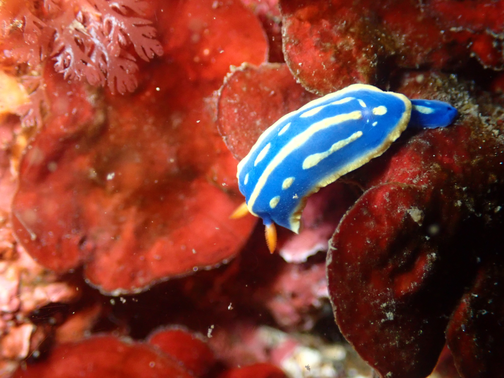
青い体と黄色いラインが目立つ、ウミウシ観察の入門種。岩肌をゆっくり探す楽しさを教えてくれます。
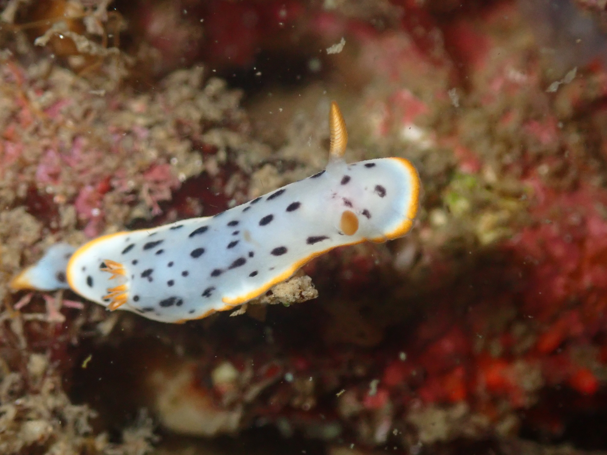
白地に黒い斑点、黄色い縁取りが特徴。アオウミウシと並んで、初心者にも見分けやすい種類です。
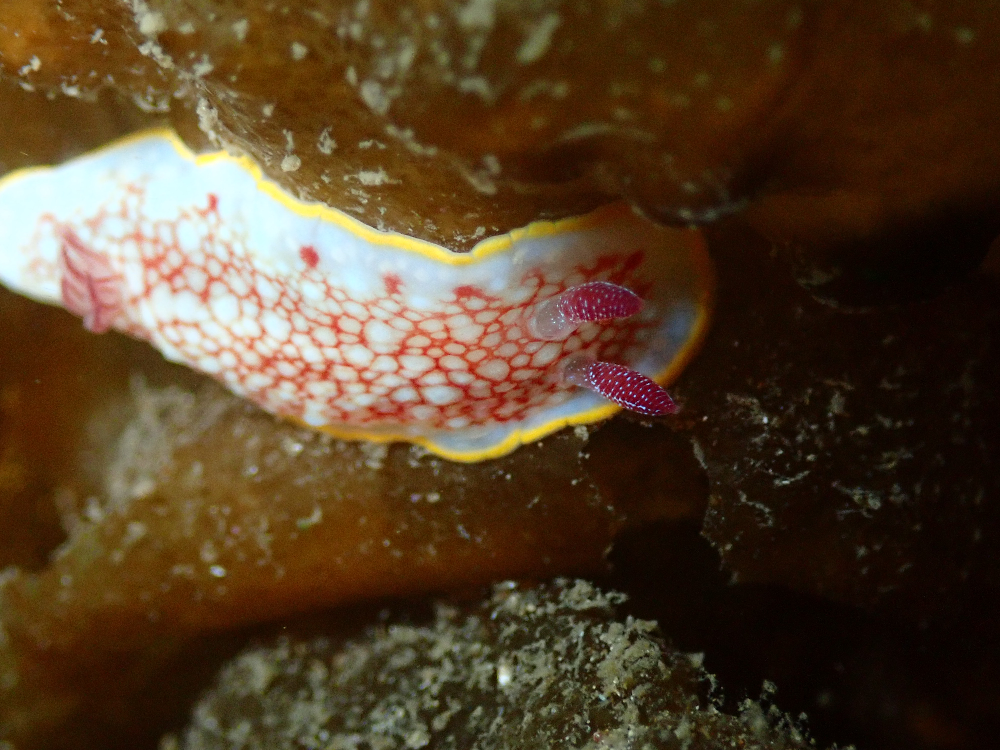
赤い網目模様が名前の由来。岩のくぼみや壁面をじっくり見ると出会えることがあります。
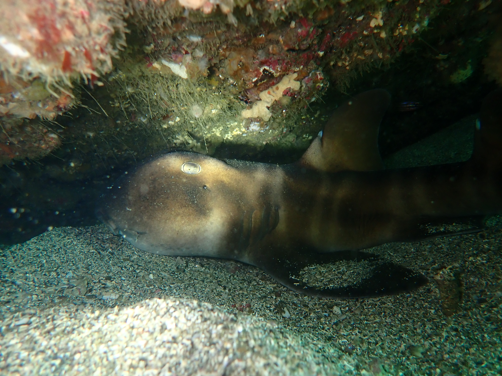
岩陰で休んでいる姿に出会えるとうれしい三浦の人気者。見つけても近づきすぎず、そっと観察します。
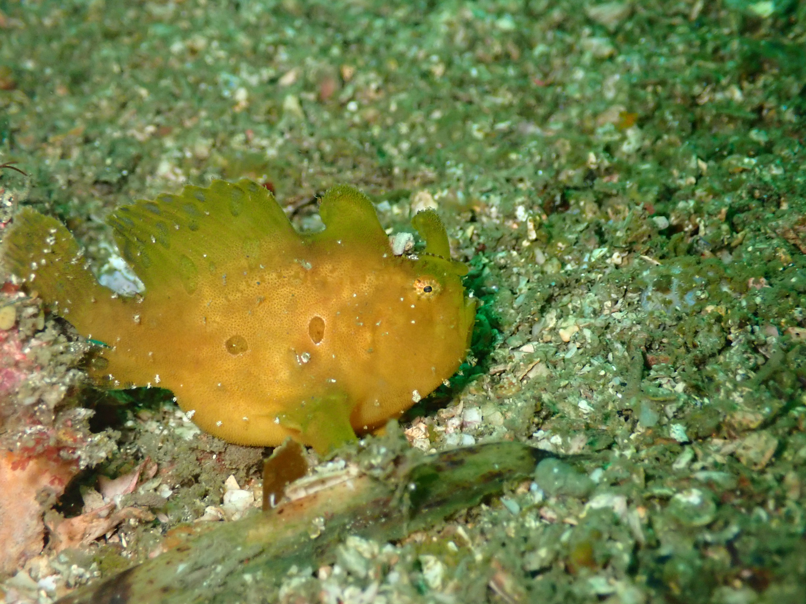
海藻や岩にそっくりな姿でじっとしています。見つけるには、ガイドの目と少しの根気が頼りです。
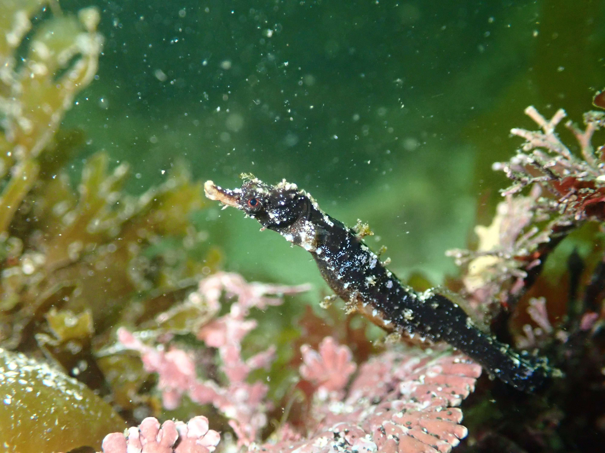
海藻にまぎれて暮らす小さな魚。体を絡ませてじっとしているので、ゆっくり探す観察向きの生き物です。
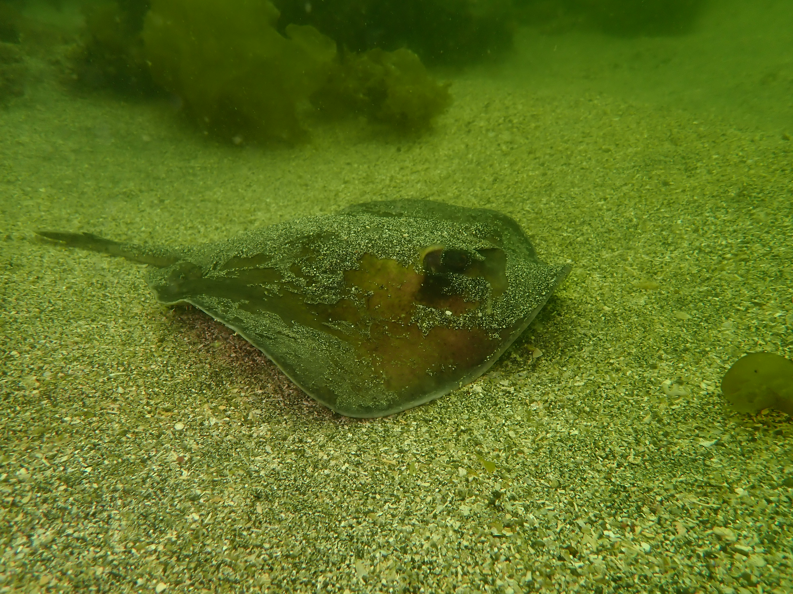
砂地でじっとしていることがあります。砂を巻き上げない泳ぎ方を覚えると、観察の幅が広がります。
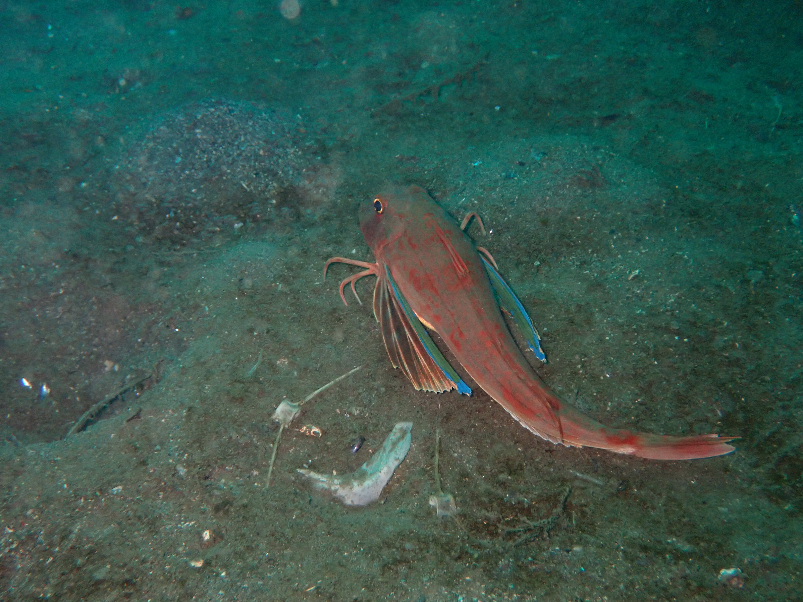
美しい胸びれを広げて砂地を歩くように移動します。出会えるとログに残したくなる印象的な魚です。
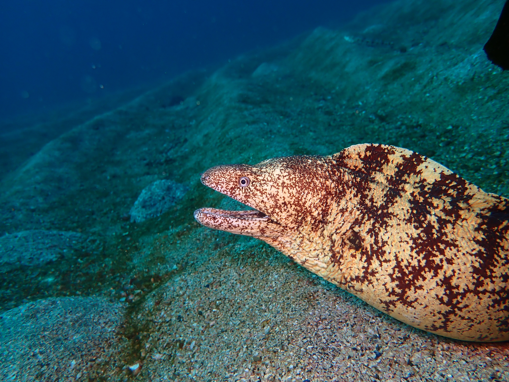
迫力ある見た目ですが、自分から近づいてくることはほとんどありません。岩の奥をのぞくと見られることがあります。
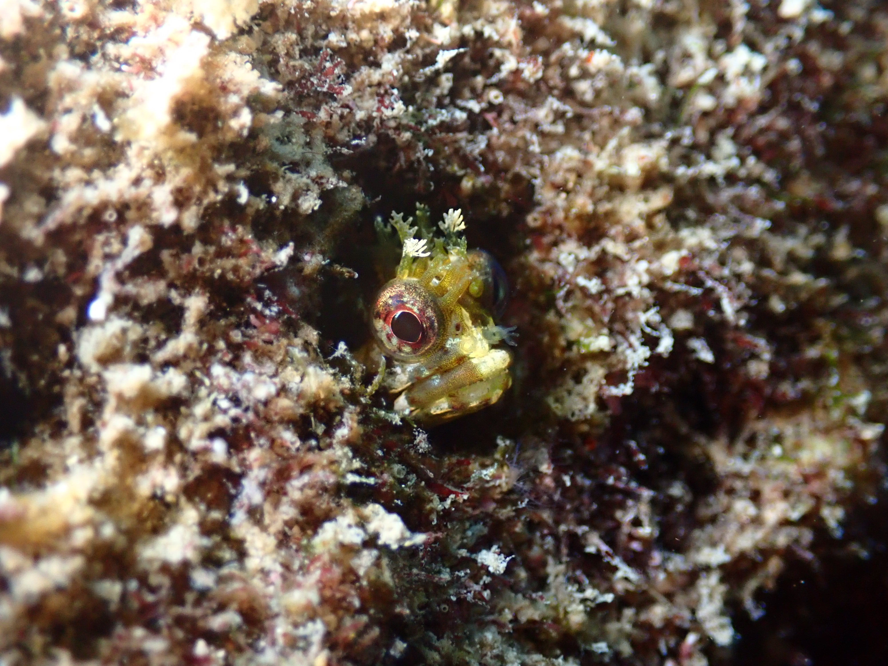
小さな穴から顔だけ出している姿が人気。安全停止中や浅場の観察でも楽しめる、かわいい被写体です。
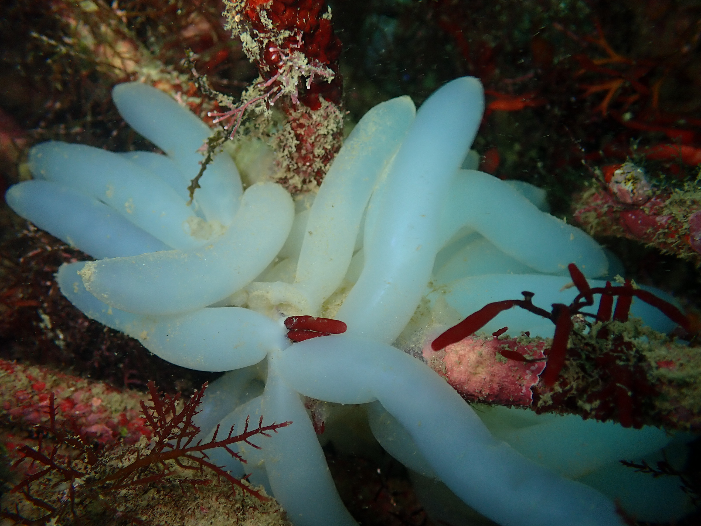
春から初夏にかけて見られることがある季節の風物詩。白い房の中に、次の世代が育っています。
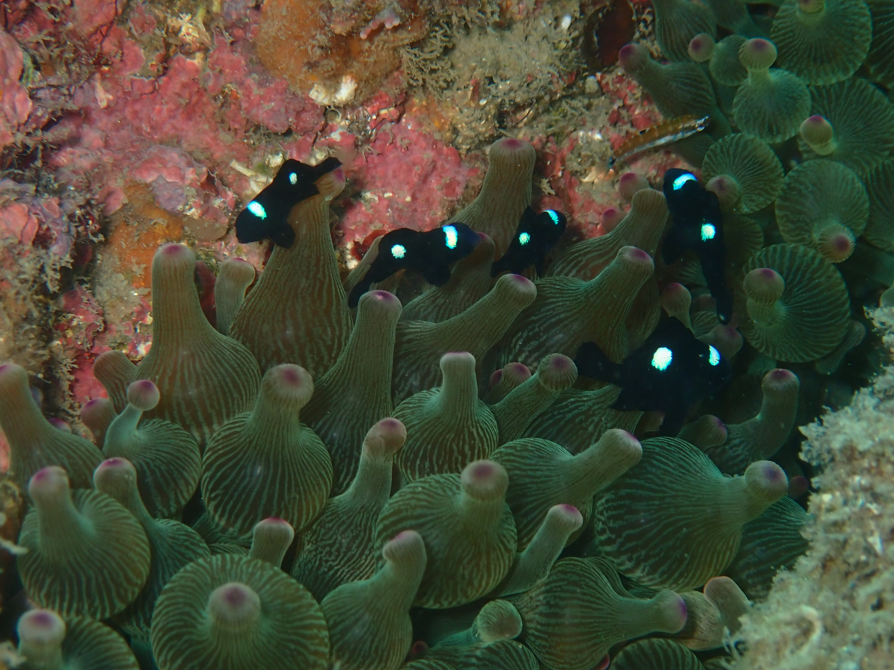
黒い体に白い点が入る小さな魚。夏から秋は、南方系の幼魚に出会える楽しみもあります。
梶の浜を含む三浦のビーチポイントは、同じ場所でも季節によって見どころが変わります。
透明度が上がりやすく、ウミウシ探しが楽しい時期。春はアメフラシや卵、幼生など、季節の変化を感じる観察も増えてきます。
水温が上がり、講習や体験ダイビングを始めやすい季節。浅場の魚も活発になり、アオリイカの卵などに出会えることがあります。
水中がにぎやかになるベストシーズン。季節来遊魚、カエルアンコウ、砂地の生き物など、ファンダイビングにもおすすめです。
初めての方でも当日の動きが分かると、海へ入る前の不安がぐっと減ります。
集合後、体調確認、器材準備、ブリーフィングを行います。講習の場合は、プールや陸上で必要なスキルを確認してから海へ向かります。
足元や波の状況を見ながら、無理のないペースでエントリーします。最初は浅場で呼吸、耳抜き、浮力を落ち着いて確認します。
講習内容や経験に合わせてルートを選びます。潜った後は見られた生き物や練習内容を振り返り、次のダイビングにつなげます。
ライセンス講習、体験ダイビング、リフレッシュ、ファンダイビングから目的に合わせてご相談ください。
海況や経験に合わせて、安全に楽しめる内容をご案内します。
城ヶ島の梶の浜ビーチポイントは、神奈川県三浦市でビーチダイビングを行う際の代表的な候補のひとつです。三浦 海の学校では、ダイビングライセンス講習、体験ダイビング、リフレッシュダイビング、ファンダイビングなどで、海況に合わせて安全に潜れるポイントを選定しています。
神奈川・三浦半島でダイビングを始めたい方にとって、実際にどんな海で潜るのかを知ることは大切です。梶の浜周辺の岩場や砂地では、ウミウシ、岩陰の魚、砂地の生き物、季節来遊魚などを観察できることがあり、講習後のファンダイビングにもつながる海の楽しさがあります。